Specify EZDB Setup Wizard |
Welcome to Specify EZDB! You have unpacked the power of Specify without the installation and maintenance requirement of MySQL. Specify EZDB includes embedded MySQL engine, and is intended for use by a single collection on a single workstation. If your project requires multiple collections then you will need to install the full version of Specify.
Note: Specify EZDB can also be used to evaluate Specify. If you are using it for this purpose, please contact the Specify team. They can provide you with a test database and the instructions needed to download and install it.
Note: If you are using a test database to evaluate Specify and have received a test database, DO NOT run the Specify EZDB Setup Wizard.
Note: A compatibility issue exists with Windows 7. If you are running Specify EZDB with Windows 7 you must run SpecifyEZDB in Compatibility Mode. This can be accomplished by right-clicking on the SpecifyEZDB.exe file in Windows 7 and choosing: Troubleshoot Compatibility > Try Recommended Settings.
The Specify EZDB Setup Wizard is required to customize the necessary components in the embedded MySQL for Specify EZDB. It walks you through the creation of a database including:
It also allows you to download Taxon (optional) and Geography authority files.
Note: Java SE Run-time Environment, i.e. JRE 1.6 (=6.0) or later must be installed on the workstation that will run Specify EZDB.
Database Information
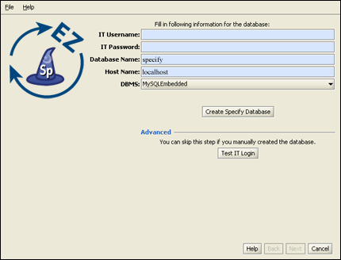
Enter MySQL IT Username and Password
The first window allows you to create your Specify database or verify that Specify can access a database you have installed. To create or verify a database, you must first complete the following information:
Type in an IT Username and IT Password. This will create an account with full administrator privileges within the embedded MySQL database manager. This account will be used by the Specify Setup Wizard to create your Specify database and a Specify Master account (in the next window) in MySQL.
Note: Please make a note of the IT username and password. Other EZDB Tools associated with Specify EZDB require this IT username and password to run.
The Database Name is pre-filled with 'Specify' but can be changed by typing in a new name into the text box. Document the database name used to log in. Once the Wizard is complete, be sure to make a note of the name.
The Host Name refers to the computer that you are using. Because you are only accessing the embedded MySQL on your local machine this should remain as 'localhost'.
Create a Specify Database
When you click the Create Specify Database button Specify will connect to MySQL using the information you have entered and then create your Specify database and insert the Specify schema.
Advanced: Test IT Login
Use this button to verify that Specify EZDB can access a database that you have installed.
Specify Master Credentials
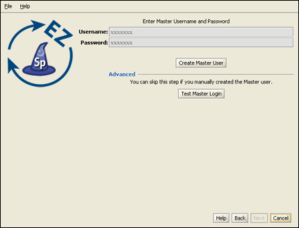
Create a Master Username and Password
The security system for Specify 6 uses both a "Master" username and password, which Specify uses to access the MySQL Database, as well as a User username and password, which allows a user to run the Specify program. The Master account has SELECT, INSERT, UPDATE, DELETE and TABLE LOCK privileges on data tables in your Specify database only and has no other MySQL privileges. Specify uses only one Master username and password for all users, but encrypts the Master password with the User information, creating an encrypted string. This allows the Master information to become unique for each user.
Specify EZDB uses the same Master username and password as the IT username and password in the first EZDB Wizard window. The username and password are filled-in for you and can not be changed.
Create the Master
When you click the Create Master User button, Specify will take a moment to create the Master account in the database. Once this account has been created you may not change the information on this screen, or any previous screens.
Advanced: Test the Master
This button is not applicable to Specify EZDB
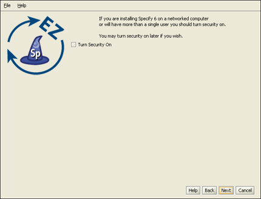
Turn Security On/Off
Specify Security refers to the set of permissions and entitlements within Specify which gives users the rights to see certain data and to use particular functions. If your Specify database will never have more than one user, (you), then Security (i.e. permissions within Specify), can be turned off. This will give you total access to all Specify program functions and data. Specify will not check your credentials or limit your access to data or Specify components.
It is not recommend that Specify EZDB be used with multiple users; therefore Security can be turned off. However, if you are using Specify EZDB to evaluate Specify and wish to evaluate security also, then simply check the box to turn security on. Security can also be turned on inside the Specify EZDB application.
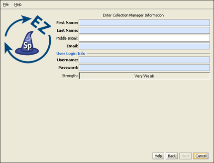
Create Specify Manager / Administrator
This account is the first Specify user account for your database, and it is created at the level of Manager, the highest level in the Specify permission model. The account usually represents the primary user, or administrator, of your collection database. An Administrator account will also be created within Specify using this information. It is this username and password that will be used to log in to Specify for the first time, once the EZDB Setup Wizard is finished. At that time additional users can be added within Specify.
Protect the username and make the password strong. This Specify manager level information will also be used to create a record in the Specify database for an ‘Agent’ representing the same person.
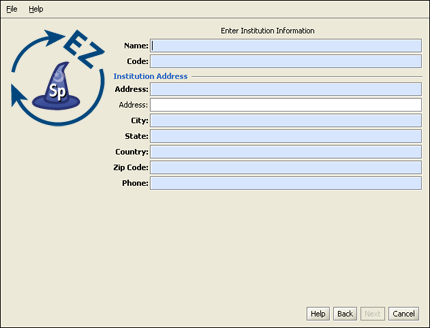
Create Institution and Enter Information
The Specify data management levels mimic the common levels of hierarchy within institutions. Access to information and Specify tools are then set at the various levels both within the application and through the User Permissions.
The Setup Wizard creates a single entry for each level of the hierarchy (Institution, Division, Discipline and Collection). This setup window is the first step in that process. Each of the screens for creating these levels must be completed before the Next button will become enabled.
The Name should be the formal name for your institution. It is a field within the Specify database, it is displayed on the Institution form, and can be queried and used in reports.
The Code is typically an acronym, codon, abbreviation or short name for your institution (not your collection). If you don't know of one, put in a placeholder, this can be edited at a later date. Institution codes are often required for web services such as DiGIR/TAPIR.
The Institution Address information, such as City, State, Country, Zip Code and Phone Number, is also added to fields within the Specify database and displayed on the Institution form and can be queried and used in reports.
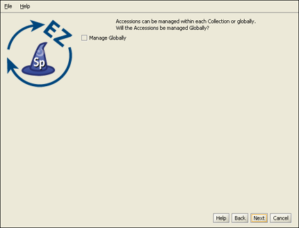
Choose Accession Level
Accessioning is the formal process by which a specimen or object is legally accepted and recorded as a museum item and differs from cataloging. Some museums and herbaria have a formal accessioning process, some do not. If your institution does not use the concept of accessions (typically handled by a registrar or administrative curator), then leave this item unchecked and simply click the Next button to proceed to the next window.
For organizations that do recognize accessions, the process usually entails documenting proof of ownership (in the form of a signed deed of gift), and that the material was legally acquired (in the form of all associated permits - collecting, import and export). An accession usually covers an entire field trip and multiple catalog items could be included within a single accession. For the institutions that use it, accessioning and its associated numbering system is usually set up as a standard museum-wide process, backed by policy.
The accession numbering scheme or sequence can either be recorded at an Institution level for all collections (Globally) or at a Division level. Since it is recommended that Specify EZDB be used with a single collection this is typically managed globally.
Note: If you choose to manage your accessions globally, you will be presented with the following window to choose a format. If you did not choose to manage your Accessions globally you will be presented with the window later in the Wizard process when you create a Collection.
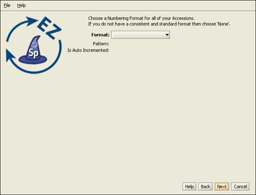
Create Accession Number Format
Accession Numbers may require a format or may simply use a number. Choose None to leave the Accession Number as a text field on the Accession form. Accession Number formats are not editable once data has been entered into this table in the database.
- Format offers several choices in the drop-down menu list:
None is the default setting, which is a 60 character string field.
Create allows you to create your own format. Choosing Create will open the Field Formatting Editor. Click HERE for the Field Formatting Editor help page.
Accession Number (2009-AA-###) The year will appear automatically in the first section (2009) of the format, and can also be manually edited. The 'AA' section of the format is alphanumeric and accepts both characters a through z and numbers. The ### section of the format is a number that is automatically incremented when Auto Numbering is turned on in Specify and manually entered when Auto Numbering is turned off. This format offers two alphanumeric characters and three incremented numbers.
AccessionNumberByYear (2009-AA-AAA) The year will appear automatically in the first section (2009) of the format, and can also be manually edited. The 'A' sections of the format are alphanumeric and accept both characters a through z and numbers. This format offers two alphanumeric sections, the first is two characters in length and the second is three characters in length.
AccessionStringFormatter (AAAAAA) This is a single alphanumeric format that accepts characters a through z and numbers. The Accession number would be seven characters in length.
- Pattern displays the pattern used to create each format (these are explained in further detail above).
- Is Auto Incremented displays a 'yes' if the format is automatically incremented.
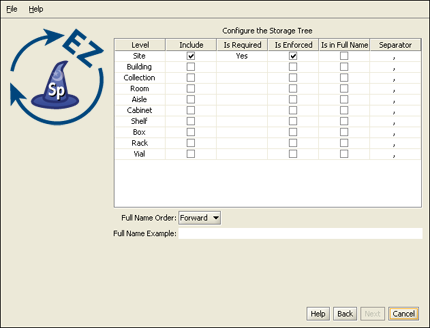
Configure the Storage Tree
Specify 6 visually presents some data types in hierarchical tree displays. These data types include the Taxon, Geography, (Specimen) Storage, Chronostratigraphy and Lithostratigraphy tables. Each tree, visually displayed as heirarchical nodes, is backed up by a tree definition, listing all levels and allowing customization of these levels. The Levels must first be defined, then nodes can be added. The Setup Wizard offers a table for each of the trees (Chronostratigraphy and Lithostratigraphy for paleo collections only) for creating tree definitions, or levels. These can also be edited at a later date from within Specify.
Nodes for the Storage tree can be added within the Specify application. The storage tree operates at the Institution level and is available and visible to all Collections, therefore, it is important to include the necessary levels for all collection.
- The Level column displays the available levels. This name can be edited from within Specify. Click the Include box to place the level in the tree.
- Include places the Level in the tree definition. Levels that are not included can not be Enforced or added to the Full Name.
- Is Required is not editable, but an indication of the tree levels that are used by Specify as a system requirement. These are automatically added to the tree and can not be deleted on this screen or later from within Specify.
- Is Enforced ensures that the level can not be skipped when adding nodes at lower levels down the tree. Levels that are Required by the system are also Enforced by the system and can not be edited.
- Is in Full Name includes the level when building a full name expression, which can be queried and used in reports. Create the full name by checking the desired boxes. This is the string that will be displayed in the storage field in the preparation table.
At least one level for Full Name must be checked before the Next button will become enabled.
- Separator refers to the character that separates the levels when displaying the full name. This can be any single character, such as a comma (,) or a space. To make the separator a space, simply double click inside the column and delete the comma, then press your spacebar once.
- Full Name Order will reverse the full name as shown in the Full Name Example.
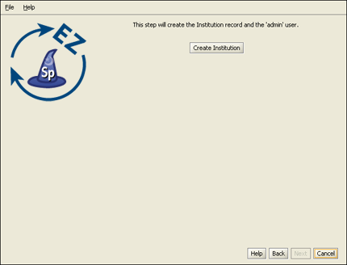
Create Institution and the Administrator
Click the Create Institution button to create your institution and add you as Administrator in your Specify database. Once this information has been created you may not change it on any of the previous screens and the Back button will become disabled.
The Institution must be created before the Next button will become enabled.
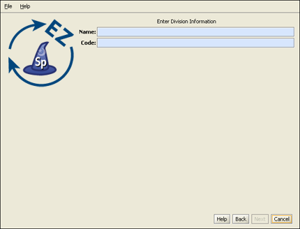
Create a Division
This window is used to create a single Division within your institutional hierarchy. Additional divisions can be added later from within Specify.
The Name will appear on the division form and can be queried and used in reports. A division is used to collectively name similar collections e.g. the Divsion of Paleontology may include Vertebrate Paleontology, Invertebrate Paleontology and Paleobotany collections. The Name is a field within the Specify database and is displayed on the Division form. It can be edited, queried and used in reports.
The Code can be a short name, acronym, codon or abbreviation. If your Division does not have a Code, put in a placeholder (this is a required field), this can be edited at a later date. Division codes are sometimes required for web services.
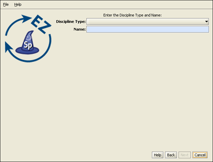
Choose a Discipline Type
Choose a taxonomic Discipline Type from the drop-down menu. Specify uses this information to load the correct default data entry Forms, Trees and schema (tables and fields) based on the predefined disciplines within Specify. If your discipline type does not appear in the list, choose the closest discipline to yours based on taxonomic qualities.
The Name is pre-filled with the discipline type name but can be any user specific variation of the Discipline Type by simply editing the pre-filled name. It can be edited, queried and used in reports. Additional Disciplines can be added from within Specify.
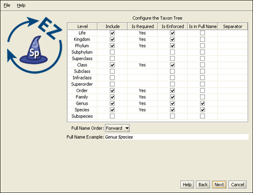
Configure the Taxon Tree
This table will create the tree definition for the Taxon tree. The Taxon tree operates at the Discipline level and will be used by all Collections within the Discipline you created in the last window. Nodes to the Taxon tree can be added later in the Wizard as well as from within Specify.
- The Level column displays the available levels. This name can be edited from within Specify. Click the Include box to place the Level in the tree.
- Include places the Level in the tree definition. Levels that are not included can not be Enforced or added to the Full Name.
- Is Required is not editable, but an indication of the tree Levels that are used by Specify as a system requirement. These are automatically added to the tree and can not be deleted on this screen or later.
- Is Enforced ensures that the Level can not be skipped when adding nodes lower down the tree.
- Is in Full Name includes the level when building a full name expression for any associated Collection Objects (which appears in the Taxon Full Name field of the taxon table). The Full Name is also displayed in the Preferred Taxon field on the Determinations form and is useful when running queries and reports when the full name is desired. The full name generally includes at least the binomial. Genus and Species fields together with any levels below species (if used). Create the full name by checking the desired boxes.
At least one level for Full Name must be checked before the Next button will become enabled.
- Separator refers to the character that separates the levels when displaying the full name. This can be any single character, such as a comma (,) or a space. To make the separator a space, simply double click inside the column and delete the comma, then press your spacebar one time.
- Full Name Order will reverse the full name as shown in the Full Name Example.
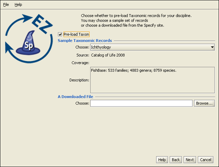
Preload Taxon Records/Nodes
The Specify Wizard not only defines the Taxon tree but also allows pre-loading of an authority file for the discipline you are creating. Authority files were created using data from the Catalog of Life Project for some of the disciplines within Specify. If this window does not appear, there are no existing authority files for your chosen discipline.
If you choose to load the data into your tree, the Taxon tree will be populated with hundreds of taxon nodes and all associated data. Then, when adding Collection Objects into your database you can simply choose a taxa from the Taxon field rather than adding each individually as needed.
Please note that loading the Taxon tree will also affect the tree definition. If you load the provided Taxon authority file for your discipline, the accompanying tree definition may include Levels that were not defined by you in the previous window, but are necessary to include all the predefined Taxon information.
Additional discipline-specific trees can be loaded from within Specify at the time new disciplines are created.
Click the Choose button for a list of taxon files for the discipline you are creating. Not all disciplines offer more than one taxon file. Once the taxon file is chosen, information will display in the Source, Coverage and Description fields for that file.
Note: Botany and Entomology authority files are partial due to the size of these files. For additional authority files please contact the Specify team.
The Downloadable File section in this window allows you to choose taxon files from your hard drive. The Setup Wizard can only install files that were downloaded from the Specify website. The Specify team is currently in the process of creating more of these files.
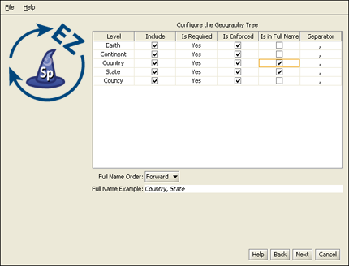
Configure and Load Geography Tree
The Geography tree operates at the Discipline level and is used by all Collections within the Discipline. Nodes to the Geography tree can be added later in the Wizard as well as from within Specify
- The Level column displays the available levels. This name can be edited from within Specify. Click the Include box to place the level in the tree.
- Include places the Level in the tree definition. Levels that are not included can not be Enforced or added to the Full Name.
- Is Required is not editable, but an indication of the tree levels that are used by Specify as a system requirement. These are automatically added to the tree and can not be deleted on this screen or later.
- Is Enforced ensures that the level can not be skipped when adding nodes lower down the tree.
- Is in Full Name includes the level when building a full name expression, which can be queried and used in reports. Create the full name by checking the desired boxes.
At least one level for Full Name must be checked before the Next button will become enabled.
- Separator refers to the character that separates the levels when displaying the full name. This can be any single character, such as a comma (,) or a space. To make the separator a space simply double click inside the column and delete the comma, then press your spacebar one time.
- Full Name Order will reverse the full name as shown in the Full Name Example.
The Wizard will automatically load data for the Geography tree, including Continents, Countries, and States throughout the world as well as Counties within the United States. Data for the Geography tree was converted from the online website of the World Gazetteer. Unwanted or unncessary nodes can be deleted from within the Specify application at a later date if desired.
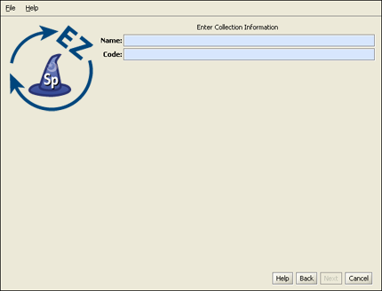
Create a Collection
Enter the Name and internationally recognized Collection Code to create a single Collection within the Discipline. This is the name that will appear within Specify on the Collection form and can be queried and used in reports.
The Code should be your standard collections community assigned code for your collection. This Code will be used in data exports and web interfaces in upcoming releases of Specify.
Additional collections can be added from within Specify.
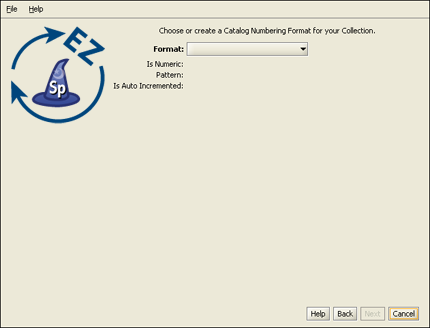
Create a Catalog Number Format
Specify is able to accept data for collection objects or observations without assigning a Catalog Number. But when Catalog Numbers are used, they must be unique for each lot, specimen or observation. Most collections routinely assign catalog numbers to incoming materials, perhaps as part of the accessioning process. These numbers may require a format with specific sections for data such as Institution Code and year or they may simply use an incrementing number.
Catalog Numbers can either be unique to each Collection, shared by several collections or be used throughout the Institution. The Catalog Number chosen at this time will not affect where it is used relative to other collections, this will be configured from within the Specify application. The Catalog Number format for this collection can not be edited once it is chosen.
Several formats are available from the drop-down menu list:
- Format offers several choices in the drop-down menu list:
None is the default setting, which is a 60 character string field.
Create allows you to create your own format. Choosing Create will open the Field Formatting Editor. Click HERE for the Field Formatting Editor help page.
CatalogNumber (2009-######) The year will appear automatically in the first section (2009) of the format, and can also be manually edited inside Specify. The '###' section of the format is a number that is six digits in length. This section can be automatically incremented when Auto Numbering is turned on in Specify or manually entered when Auto Numbering is turned off. These two sections are separated by a dash.
CatalogNumberAlphaNumByYear (2009-######) The year will appear automatically in the first section (2009) of the format, and can also be manually edited from within Specify. The '###' section of the format is a number that is six digits in length. This section can be automatically incremented when Auto Numbering is turned on in Specify or manually entered when Auto Numbering is turned off. These two sections are separated by a dash.
CatalogNumberNumeric (#########) This is a nine digit number that is automatically incremented when Auto Numbering is turned on in Specify or manually entered when Auto Numbering is turned off.
CatalogNumberString (XXXXXXXXXX) This is a ten digit string that can include numbers, alphabet or characters
- Is Numeric will display a 'yes' if the format is numeric.
- Pattern displays the pattern used to create each format (these are explained in further detail above).
- Is Auto Incremented displays a 'yes' if the format is automatically incremented.
Collections that do not use one specific format for their Catalog Number may wish to choose CatalogNumberString from the list, this will allow any format to be entered as long as they are all of the character length chosen.
Create an Accession Number Format
Note: If you chose to manage your Accessions globally you will have already chosen a format for your accession number and will not be presented with this window again.
Accession Numbers may require a format or may simply use a number. Choose None to leave the Accession Number as a text field on the Accession form. Accession Number formats are not editable once data has been entered in the database.
- Format offers several choices in the drop-down menu list:
None is the default setting, which is a 60 character string field.
Create allows you to create your own format. Choosing Create will open the Field Formatting Editor. Click HERE for the Field Formatting Editor help page.
Accession Number (2009-AA-###) The year will appear automatically in the first section (2009) of the format, and can also be manually edited. The 'AA' section of the format is alphanumeric and accepts both characters a through z and numbers. The ### section of the format is a number that is automatically incremented when Auto Numbering is turned on in Specify and manually entered when Auto Numbering is turned off. This format offers two alphanumeric characters and three incremented numbers.
AccessionNumberByYear (2009-AA-AAA) The year will appear automatically in the first section (2009) of the format, and can also be manually edited. The 'A' sections of the format are alphanumeric and accept both characters a through z and numbers. This format offers two alphanumeric sections, the first is two characters in length and the second is three characters in length.
AccessionStringFormatter (AAAAAA) This is a single alphanumeric format that accepts characters a through z and numbers. The Accession number would be seven characters in length.
- Pattern displays the pattern used to create each format (these are explained in further detail above).
- Is Auto Incremented displays a 'yes' if the format is automatically incremented.
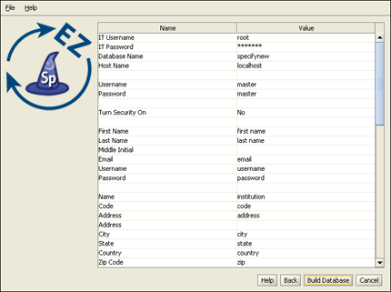
Summary Window
Congratulations! You have finished the Specify EZDB Setup Wizard. This last screen displays all the data that has been created using the information provided in the preceding windows. If edits are required, simply click the Back button until the desired window displays and re-enter the information.
Click the Build Database button to create a blank database with all the necessary components to begin using your collection. Then, select the Specify application from your menus and login with your newly created username and password.